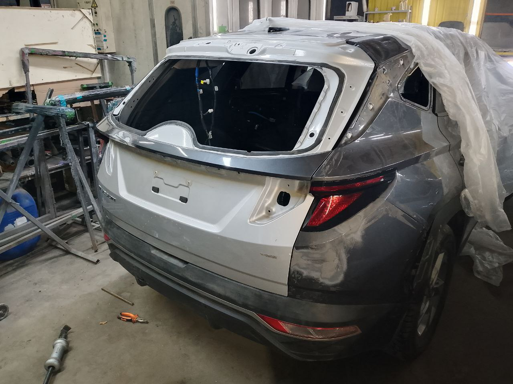
01Кузовной ремонт
Восстановление повреждённых крыльев, дверей, порогов, капотов и крышек багажника после ДТП любой тяжести. Рихтовка металла, сварочные работы, антикоррозийная защита швов и точная регулировка зазоров.
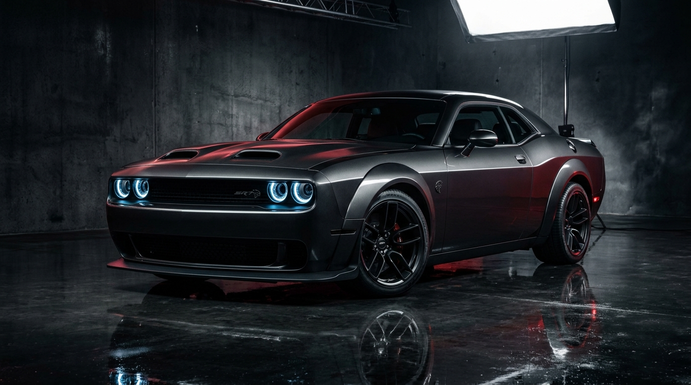
Профессиональный кузовной ремонт, покраска и восстановление автомобилей в Москве. Стапельные работы, компьютерная колористика с учётом выцветания покрытия и бережное сохранение заводской геометрии.
Более 16 лет мы занимаемся кузовным ремонтом в Москве. Каждый автомобиль после ДТП или городской притёртости проходит строгий технологический цикл: от выверки силовой геометрии на стапеле до многослойного окраса в камере.
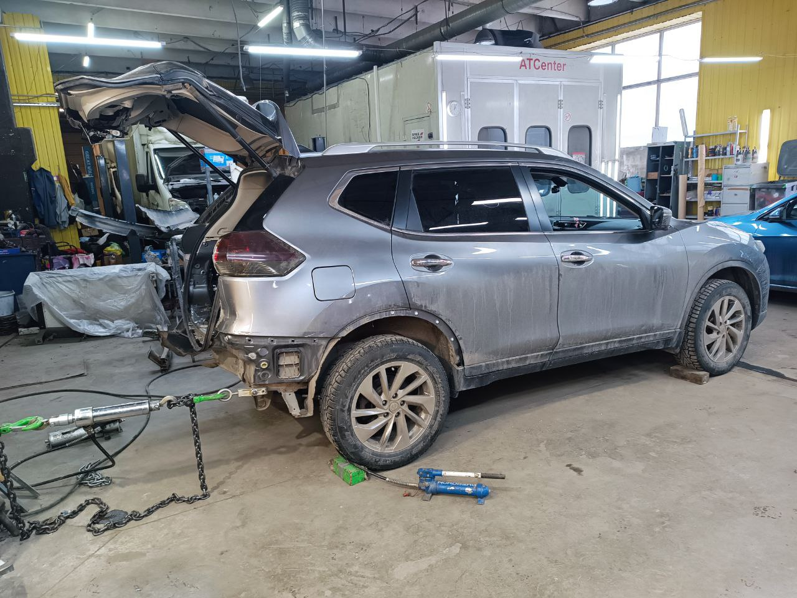
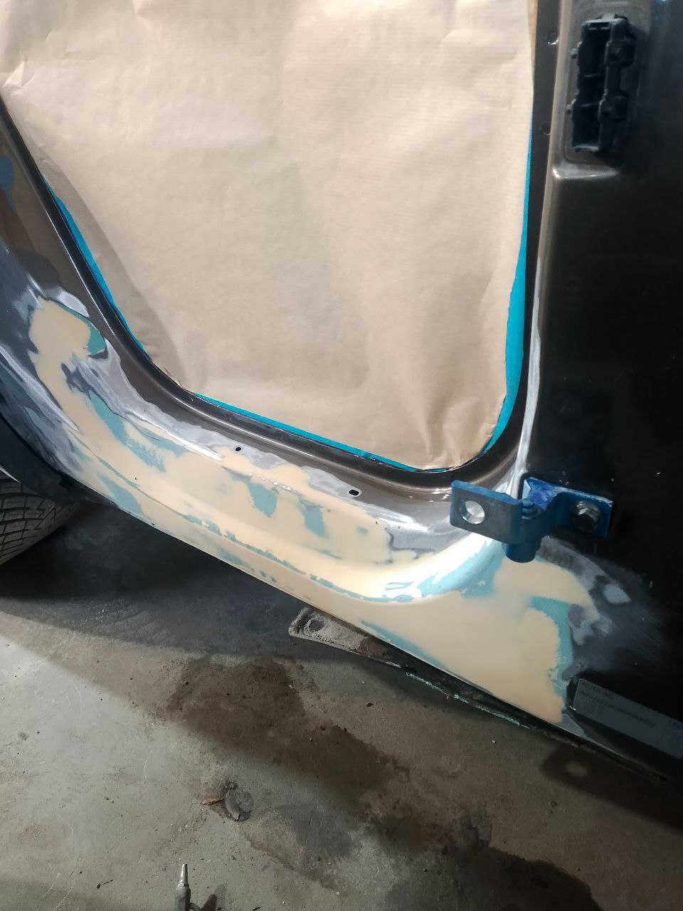
Оригинальная заводская деталь с сохранённым силовым каркасом и грамотной рихтовкой зачастую надёжнее неоригинальных аналогов. Мы восстанавливаем геометрию крыльев, дверей, порогов и полипропиленовых бамперов, выставляя заводские зазоры.
Полный цикл работ по кузову, оптике, стёклам и лакокрасочному покрытию в двух специализированных цехах Москвы.

01Восстановление повреждённых крыльев, дверей, порогов, капотов и крышек багажника после ДТП любой тяжести. Рихтовка металла, сварочные работы, антикоррозийная защита швов и точная регулировка зазоров.
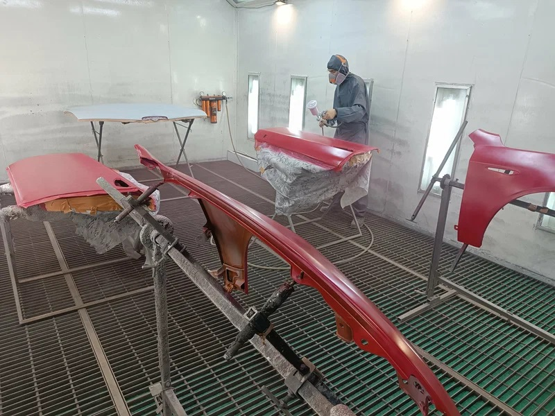
02Устранение притёртостей, сколов и глубоких царапин методом плавного «размытого» перехода по базе и лаку без перекраса всей детали целиком.
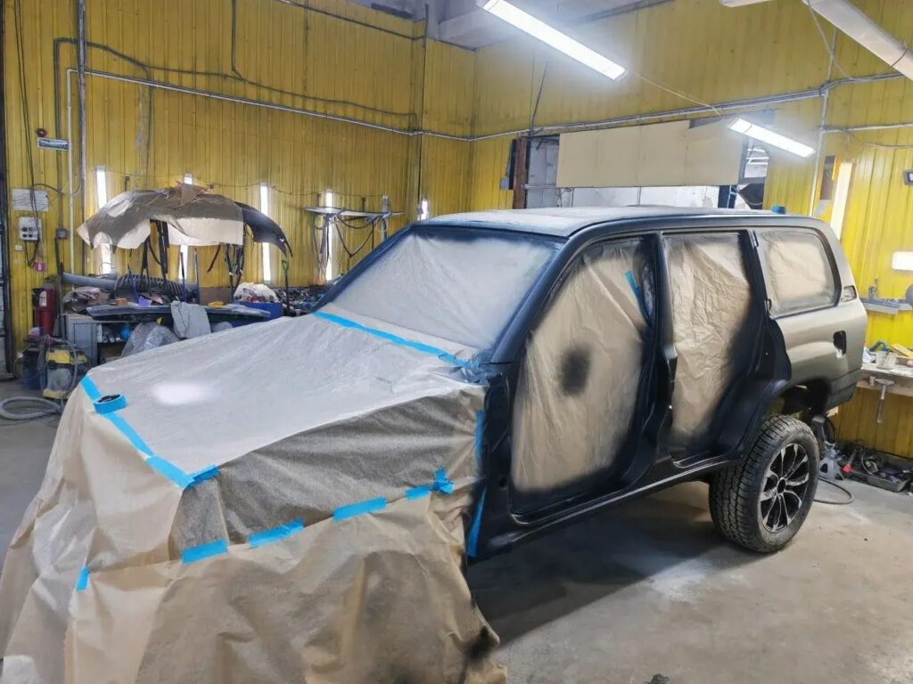
03Комплексное обновление лакокрасочного покрытия со снятием бамперов, оптики и молдингов, окраской дверных проёмов и высокотемпературной сушкой в камере.
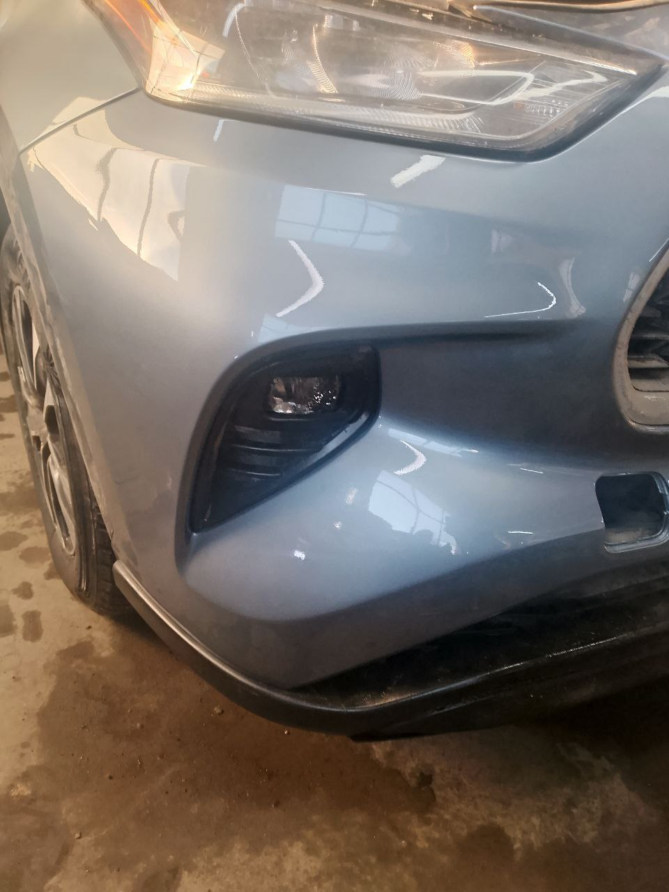
04Термосварка трещин, сквозных пробоев и разрывов пластика с внутренней стороны, восстановление отломанных ушек крепления и окраска с эластичным пластификатором.
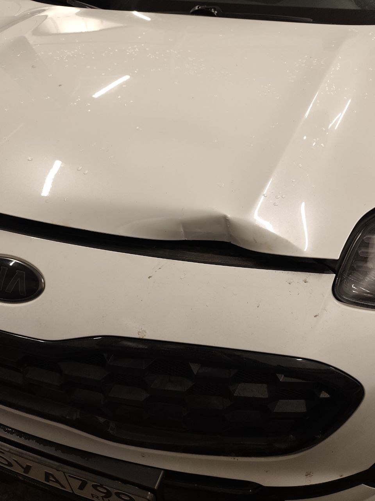
05Ювелирное выпрямление парковочных вмятин, последствий града и падения снега при условии сохранности заводского лакокрасочного слоя.
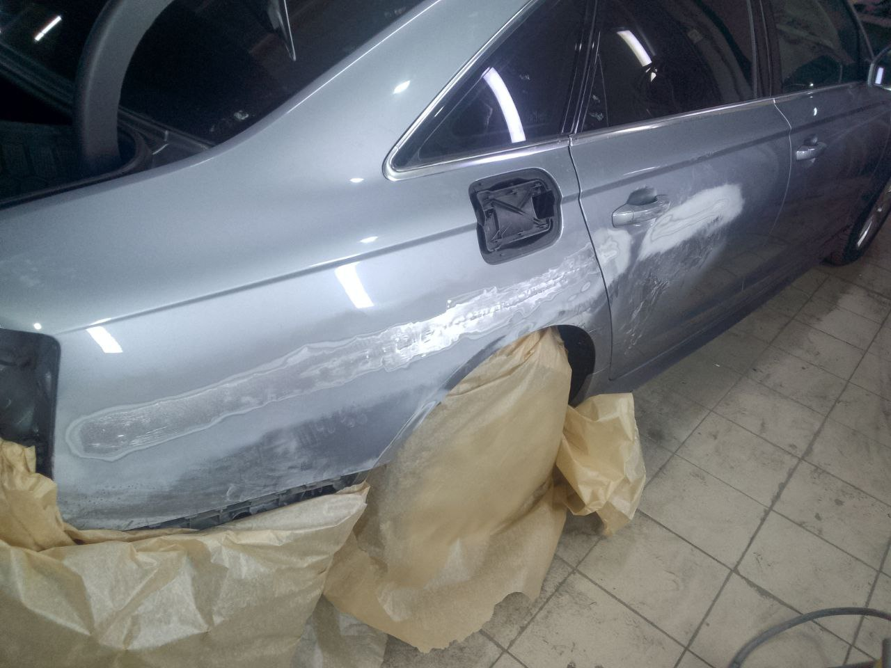
06Устранение перекосов дверных и оконных проёмов, крышки багажника и капота. Возвращение симметрии кузова и штатной работы всех замков и уплотнителей.
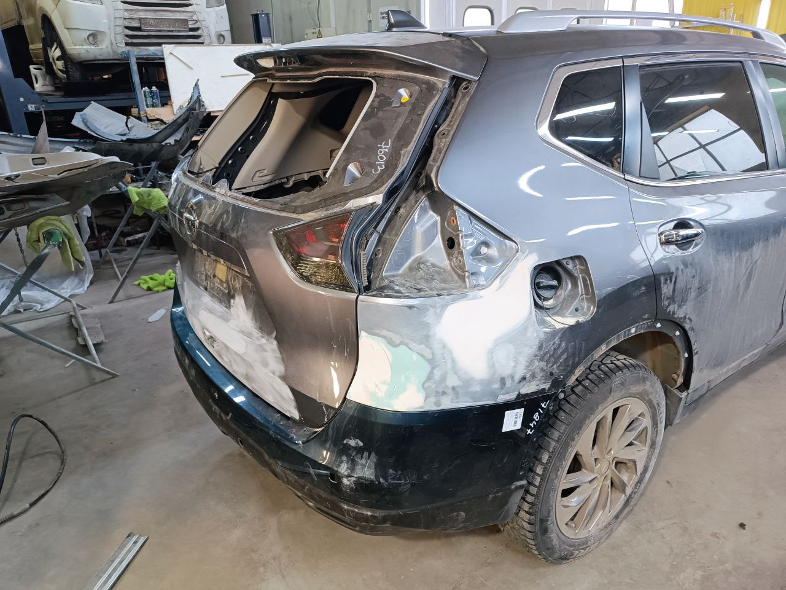
07Сложная силовая вытяжка лонжеронов, моторного щита, средних стоек и задних панелей на стапельном стенде после тяжёлых дорожно-транспортных происшествий.
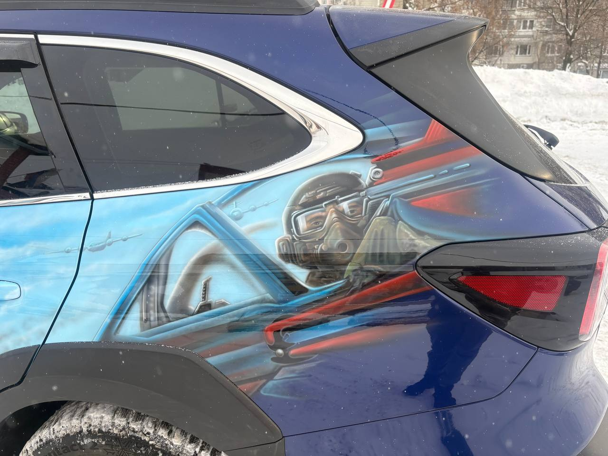
08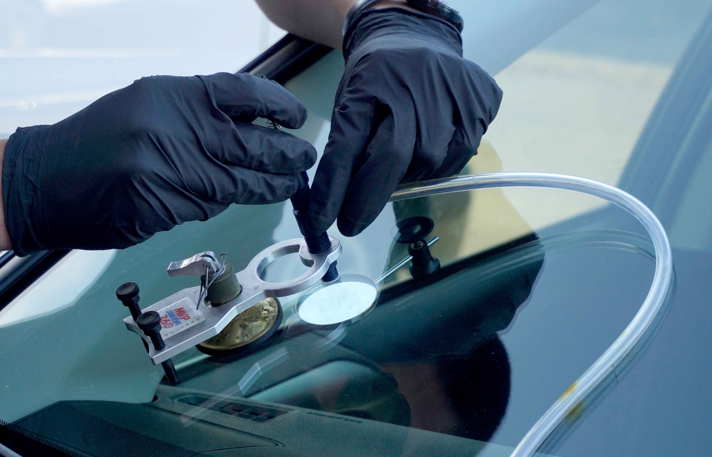
Восстановительная и финишная полировка кузова, нанесение защитных керамических составов, а также профессиональный ремонт сколов и остановка трещин автомобильных стёкол полимерным инжектором.
Покраска детали «в стык» на автомобиле с пробегом требует не просто заводского кода краски, а точной поправки на реальное выцветание и структуру зерна (металлик, перламутр, ксералик).
Собственная стойка микс-системы и опытный колорист позволяют формировать рецептуру эмали с проверкой под разным углом освещения перед нанесением на кузов.
За годы эксплуатации ультрафиолет и реагенты меняют оттенок заводского лака. Мы корректируем тон под реальное состояние соседних элементов конкретного автомобиля.
Используем проверенные лакокрасочные системы (включая линейки уровня Glasurit, Cromax, Duxone) и технику плавного распыла базы и лака для нивелирования границы ремонта.
Окраска и сушка проводятся в специализированной камере с приточно-вытяжной вентиляцией и фильтрацией воздуха, что защищает лак от пыли и формирует заводскую шагрень.
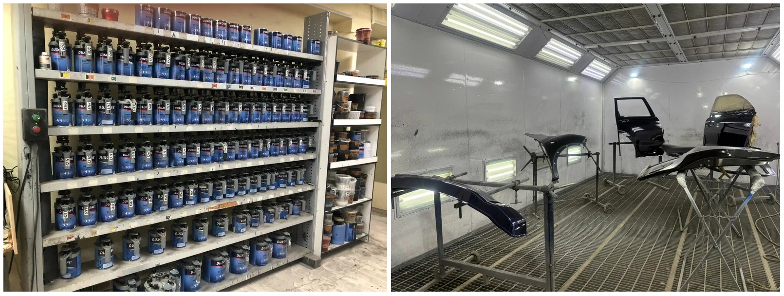
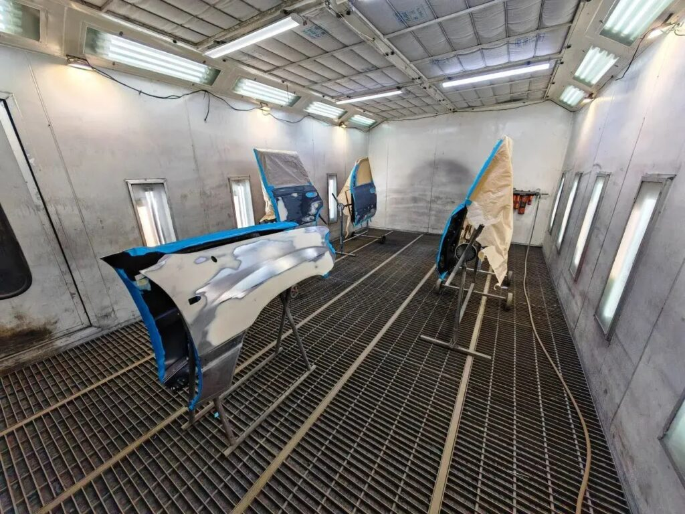
Фотографии реальных автомобилей из ремонтного архива ATCenter (`av-tt.ru/galereya-rabot/`). Нажмите на любую карточку, чтобы открыть полноразмерный фотоотчёт этапов ремонта.
Специализируемся именно на кузовном восстановлении, стапельных работах и сложной малярной подготовке автомобилей любых марок.
Гидравлические стапельные стенды, споттеры для рихтовки стали и алюминия, профессиональный инструмент PDR и оборудование для сварки пластика.
Соблюдение температурного режима сушки и чистоты воздушного потока исключает попадание пыли и обеспечивает прочность лакового слоя.
Точный подбор автоэмалей с обязательной корректировкой на возрастное выцветание покрытия соседних деталей вашего автомобиля.
Применяем проверенные грунты, шпатлёвки, базовые эмали и высокопрочные лаки, устойчивые к реагентам и дорожному пескострую.
Предварительный расчёт по фотографиям в WhatsApp или Telegram и честная детальная калькуляция после осмотра автомобиля мастером в цехе.
Предоставляем гарантию на отдельные виды выполненных кузовных и малярных работ сроком до 1 года. Мы отвечаем за отсутствие отслоений лака и сохранение геометрии.
Перемещайте ползунок вправо и влево, чтобы сравнить реальные парные фотографии одного и того же автомобиля до поступления в цех и после выдачи владельцу.
Мы не используем сложные анкеты и ботов. Выберите удобный филиал, позвоните напрямую мастеру или пришлите фотографии повреждения в мессенджер для оперативной оценки ремонта.
Москва, ул. Привольная, д. 2, стр. 4
Москва, ул. Южнопортовая, д. 15, стр. 4